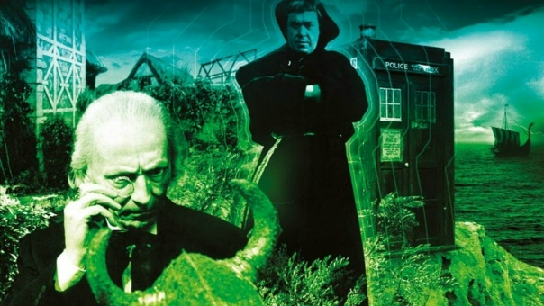

Эра Первого Доктора (2 сезон)
<<< НАЗАД ||| 9. Вмешивающийся во время ||| ДАЛЬШЕ >>>
Субтитры: Русские и Английские |  |
|---|---|
Субтитры: Русские {Jaskier} и Английские | |
3-24 июля 1965
4 эпизода по 25 мин.
| 1. Наблюдатель 2. Вмешивающийся монах 3. Битва умов 4. Поражение | Сохранились - 16mm t/r |
|---|
 |  |
«Вмешивающийся во время» сталкивает Доктора с Монахом — Повелителем Времени, который меняет историю в Англии 1066 года. Монах внедряет технологии в эпоху викингов и саксов, чтобы перекроить исход битвы при Гастингсе. Доктор срывает план, лишая Монаха возможности вернуться, и подтверждает главный принцип: нельзя менять историю ради амбиций. Серия впервые раскрывает тему вмешательства в «фиксированные точки» и знакомит со спутником Стивеном Тейлором.
 VHS+Boxset - ноябрь 2002 | DVD - 4 февраля 2008 |  Blu-ray - 5 декабря 2022 * Версия в нашей группе |
|---|


 | В 2023 году вышел сериал, где спутники доктора вспоминают свои приключения в консольной комнате "ТАРДИС воспоминаний". По сути идет полный повтор старых серий со вставками постаревших актеров в начале и в конце. В "Историях ТАРДИС" эта серия является ПЯТОЙ! |

